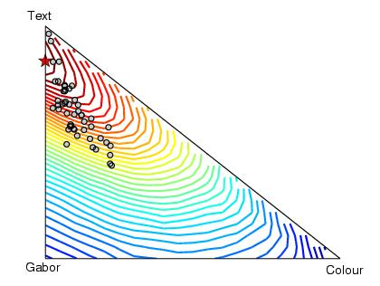
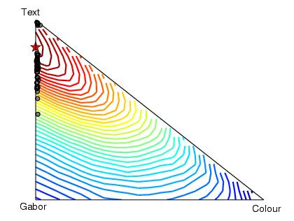
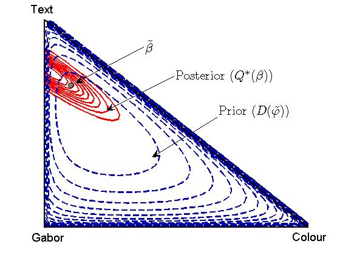
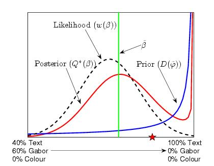

Hierarchic Bayesian Models for Kernel Learning - Supplementary Information
Abstract
The integration of diverse forms of informative data by learning an optimal combination of base kernels in classification or regression problems can provide enhanced performance when compared to that obtained from any single data source.We present a Bayesian hierarchical model which enables kernel learning and present effective variational Bayes estimators for regression and classification. Illustrative experiments demonstrate the utility of the proposed method. Matlab code replicating results reported is available at http://www.dcs.gla.ac.uk/~srogers/old/kernel_comb/kernel_comb.html.
Contact
{srogers,girolami}@dcs.gla.ac.uk
Downloads
The following downloads provide all the code (written in Matlab) required to replicate the results given in the paper
Note: the MAP solutions require optimsation toolbox for quadratic programming, VB solutions require stats toolbox for the variational sampling.
[kern_comb.tar.gz] VB code
Instructions: The following files should be found in the archive.
- [vb_regression_dirichlet.m] Variational Bayes regression
- [vb_classification_dirichlet.m] Variational Bayes classification
- [vb_class_test.m] Demo script for VB classification
- [kernel.m] Function for calculating general kernel functions
- [rbf_kern.m] RBF kernel function (called by kernel.m)
- [vis_posterior.m] Visualise the prior and posterior on the simplex
Extract the two archives into the same directory. Run matlab and from the prompt, type vb_class_test to run the example classification script. For more information, contact the authors.
Example
The following example illustrates the ability of the algorithm to automatically combine heterogenous kernels for a classification task. The dataset used consists of text and images from web pages describing three distinct categories of content - Sport, Aviation and Paintball. In this example, we have focused on the problem of performing a binary classification between Sport and Paintball. For each webpage, three different descriptions are available - the text content of the page and two sets of image features (Gabor wavelets and Colour histograms). From these data, we can create three separate Kernels - cosine kernels for the two sets of image features and a diffusion kernel for the text.
Because of the small number of kernels, it is possible to perform a search across the simplex defining all of the possible combinations to evaluate how well the algorithm performs.
In the next two figures we can see the positions on the simplex of the posterior expectations for the kernel weighting coefficients for each of the fifty runs with hyper-parameter updates (first) and without (second). The expectations are shown as grey circles. The contours give the test performance at each position, determined by exhaustive search. The stars show the best combination as achieved by exhaustive search.


The following figure shows the prior, posterior and expected value for the weightings (beta) for an example run with hyper-parameter updates. Note how the posterior is confined to an area of the simplex that gives low experimental test error (see previous figures).

Finally, taking one of the examples from the runs without hyper-paramater updates, we can look across the edge of the simplex corresponding to mixtures of just text and Gabor and see that again the posterior has a large proportion of mass in the area of low test error.
